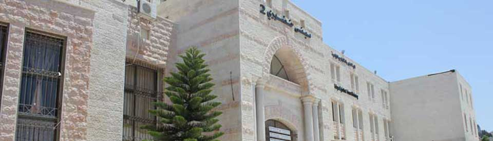

من نحن

مركز معا للتطوير هو مؤسسة فلسطينية للتدريب مستقلة وغير حكومية وغير حزبية تأسست في كانون الثاني (يناير) 1989 ، وهي مسجلة بموجب القانون كمنظمة غير ربحية. يقع المكتب الرئيسي في رام الله والمكاتب الفرعية الأربعة في غزة وخان يونس وطولكرم وجنين. إن عمل معان مستنير بضرورة إنشاء مبادرات مستقلة تعتمد على الذات تؤدي إلى تنمية الموارد البشرية من أجل التنمية المستدامة ، والتي تتضمن قيم الاكتفاء الذاتي والتمكين الذات
المنصة المثلى للتفاعل مع الشباب
"هدفنا أن يصنع الشباب العربي نموذجا عالمياً في بناء الإنسان والأوطانمبادرات
كل المبادرات
مبادرات قادمة
مبادرات انتهت


آخر الاخبار
تجارب ملهمة


Email : info@maan-ctr.org
دوار حيدر عبد الشافي /عمارة المعتز2 الطابق الأرضي /بجوار بنك الدم
970 - 8 - 2823712 / 970 - 8 - 2840287